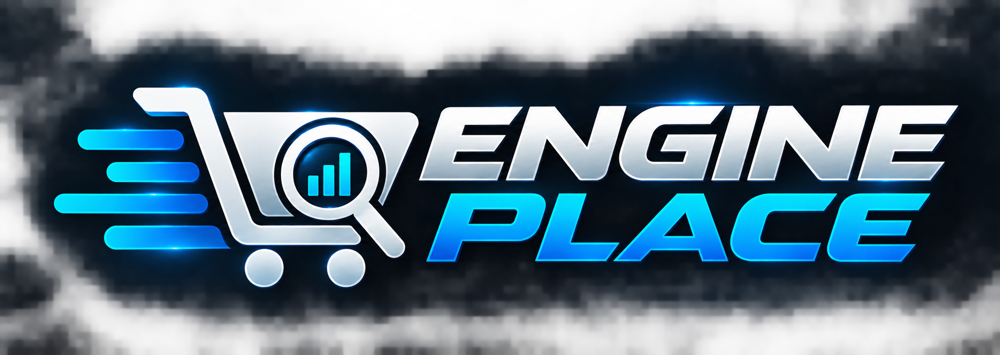

Crie sua Watchlist
Defina o produto e os critérios que deseja acompanhar.

✈ ACESSAR NO TELEGRAMO ENGINE PLACE monitora anúncios conforme os critérios das suas Watchlists e envia as oportunidades encontradas diretamente para o seu Telegram.
Defina o produto e os critérios que deseja acompanhar.
As Watchlists ativas são pesquisadas nos ciclos de monitoramento.
Quando uma oportunidade compatível é encontrada, você recebe o alerta.
Suas Watchlists entram nos ciclos de pesquisa do sistema.
Configure sua busca de acordo com os critérios disponíveis.
As oportunidades encontradas chegam diretamente para você.
Gerencie suas Watchlists sem repetir pesquisas manualmente.
Monitoramento de oportunidades pelo Telegram
É uma busca configurada por você para ser monitorada pelo ENGINE PLACE.
Os alertas são enviados diretamente pelo bot oficial do ENGINE PLACE no Telegram.
Não. O serviço monitora e organiza informações de anúncios. Qualquer negociação ocorre entre o usuário e terceiros.
Não. O monitoramento depende das fontes consultadas e das condições de funcionamento delas.